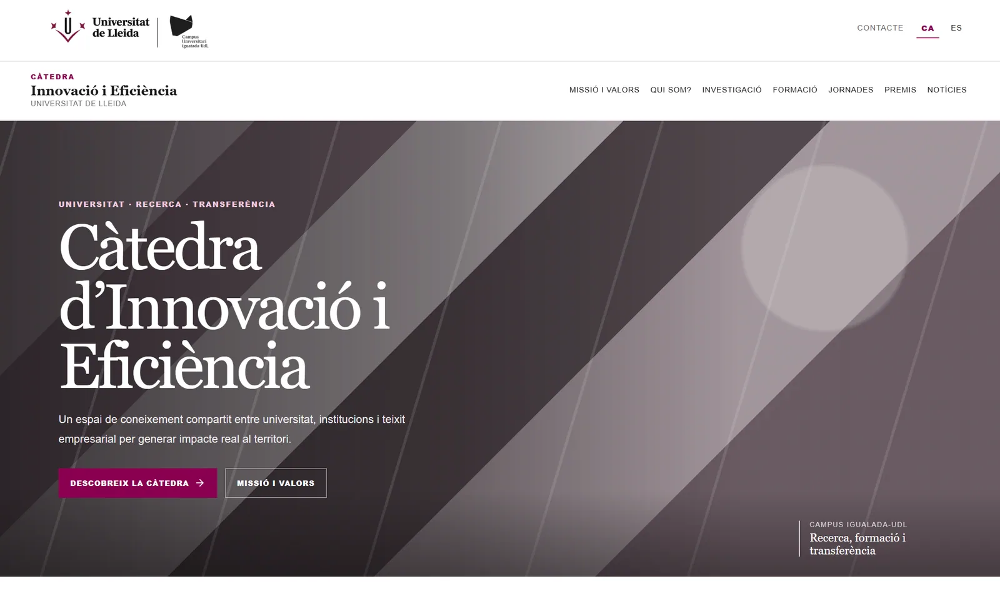

01
SaaS · UX/UI · Full stack
ActClub
Una plataforma multi-club per gestionar activitats, inscripcions, socis, assistència i cobertures.
Disseny de producte · Desenvolupament full stack · Màrqueting digital
Combino estratègia, UX/UI i desenvolupament per transformar problemes reals en solucions útils, clares i escalables.
Vic · Barcelona
Disponible per a projectes digitals
Projectes realitzats
Una plataforma multi-club per gestionar activitats, inscripcions, socis, assistència i cobertures.
Plataforma per a la gestió de tasques i projectes d'equips incorporant IA per transcripció de veu a text i automatització.
Plataforma de gestió d'un CDIAP - Centre de Desenvolupament Infantil i Atenció Precoç, dirigit a nens de 0 a 6 anys.
Aplicació per al seguiment d'entregues de paquets, ja siguin de bugaderia o de qualsevol altre material: ruta del repartidor des del mòbil, amb funcionament sense cobertura, signatura i fotos, i tauler d'oficina per planificar rutes i gestionar incidències.
Aplicació web per avaluar perfils, llocs de treball i facilitar el matching de competències.
Conceptualització i disseny de l'aplicació de Gestió SGI, establint objectius, iniciatives i indicadors clau de rendiment.
Aplicació per a la gestió de dispositius RFID, permetent el seguiment i control eficient dels actius.
Desenvolupament del pla estratègic d'una entitat social, establint objectius, iniciatives i indicadors clau de rendiment.
Plataforma per a la gestió d'inspeccions tècniques, de legionel·losi, i altres serveis relacionats.
Redisseny d'una experiència institucional que combina identitat universitària, claredat i una presència digital actual.
Web del club ciclista: calendari de sortides, activitats, notícies, inscripció de socis i fins i tot un minijoc.
Conceptualització d'una eina per generar calendaris laborals respectant regles, disponibilitats i necessitats del servei.
Conceptualització d'una aplicació per al seguiment d'usuaris mitjançant la veu, reduint errors i millorant l'eficiència del procés.
+ detall del projecte · ↗ web publicat
Serveis · Freelance
Ajudo empreses i entitats de punta a punta: des de dissenyar i desenvolupar l'eina digital fins que arribi a qui la necessita.
Vinc del producte i de les dades, no d'una agència: cada acció té un objectiu, una mesura i una decisió darrere.
Parlem del teu projecteRecerca, fluxos, prototips i interfícies clares, pensades per a qui les fa servir cada dia.
Aplicacions web i instal·lables amb React, Node.js i MongoDB, de la idea al desplegament.
Dictat per veu, integració amb Claude i fluxos que estalvien feina repetitiva.
Webs ràpides, clares i preparades per aparèixer a Google i convertir visites en contactes.
Campanyes a Google Ads i Meta Ads amb pressupost controlat i orientades a resultats.
Fluxos que atenen i fidelitzen clients sense feina manual repetitiva.
Mesura amb Google Analytics i Power BI per saber què aporta cada euro invertit.
Estratègia de continguts i presència a xarxes coherent amb la teva marca.
Empreses
Gestió, rutes i qualitat adaptades al dia a dia de qui les fa servir.
Entitats i institucions
Plataformes de seguiment, indicadors i webs institucionals clares i accessibles.
Clubs i comunitats
Activitats, inscripcions i presència digital per a grups de persones.
Sobre mi
Treballo a la intersecció entre persones, negoci i tecnologia. M'agrada entendre bé el problema abans d'obrir Figma o escriure una línia de codi.
El meu perfil combina experiència en producte, UX/UI, desenvolupament web, dades i intel·ligència artificial aplicada.
Més enllà de la pantalla
L'esport d'ultradistància m'ha ensenyat a preparar objectius ambiciosos, gestionar la incertesa i mantenir la constància quan els resultats encara no es veuen.
Trasllado aquesta mentalitat als productes digitals: estratègia, disciplina, capacitat d'adaptació i una millora contínua basada en dades.
Avançar amb constància en projectes llargs i complexos.
Dosificar recursos, prioritzar i prendre decisions en el moment adequat.
Compartir recorregut, aprenentatges i objectius amb altres persones.
Disciplina
Preparació, resistència i gestió física i mental durant moltes hores.
Comunitat
Organització d'activitats, sortides socials i iniciatives per fer créixer el club.
Comunicació
Esport, producció audiovisual, streaming i creació de continguts en directe.
«Els grans objectius no es resolen amb una única acceleració, sinó mantenint una bona direcció durant tot el recorregut.»
Com treballo
Objectius, persones, context i limitacions.
Prioritats, fluxos, arquitectura i mètriques.
Wireframes, prototips i sistema visual.
Frontend, backend, integracions i proves.
Mesura, aprenentatge i iteració contínua.
Articles
Els algoritmes ja decideixen, en silenci, bona part de la nostra vida. La pregunta és si també han de ser-hi quan una persona demana ajuda als serveis socials.
Amb l’alerta vermella per pluges a València i Alacant, les xarxes tornen a omplir-se de vídeos virals i missatges que barregen realitat i desinformació. Com la IA ajuda a detectar-los.
Cada setmana hi ha nous ciberatacs, robatoris de dades o serveis paralitzats, però moltes empreses continuen sense estar preparades.
El 1987 Fred Brooks publicava “No Silver Bullet: Essence and Accidents of Software Engineering”. Què en queda, gairebé quatre dècades després, en temps d’IA?
La gestió eficient del suport, intern i extern, és fonamental: rapidesa de resposta i cap sol·licitud perduda. Un cas pràctic d’automatització.
Quin és l’estat de la transformació digital al Tercer Sector? Una mirada a les dades de maduresa digital i la bretxa digital a les entitats socials.
Dos termes sovint confosos però amb implicacions ben diferents: aprofitar la tecnologia per innovar sense perdre l’ADN ni la missió de l’organització.
Tens un projecte?
Aplicació web · Disseny i desenvolupament
Una plataforma de gestió de competències, encaix laboral i seguiment social, dissenyada i desenvolupada per mi de principi a fi.
El punt de partida
Acompanyar centenars de persones en processos de formació i inserció laboral vol dir gestionar molta informació: perfils competencials, avaluacions a l'aula i al lloc de treball, i seguiment periòdic d'un equip de professionals repartits en diversos serveis i centres.
Tot això vivia repartit entre fulls de càlcul, papers i el criteri personal de cada professional: difícil de comparar, de sumar i d'auditar. Vaig dissenyar i construir un sol sistema on cada competència, cada avaluació, cada hora de seguiment i cada encaix amb un lloc de treball queda registrat de manera coherent, sense perdre la flexibilitat que calia per a una feina tan humana.
Què fa
Un arbre de competències i indicadors amb quatre nivells de puntuació, i un motor d'encaix que compara el perfil real d'una persona amb els requisits d'un lloc de treball.
Escales de puntuació versionades i uns pesos configurables entre context d'aula i de lloc de treball, per servei.
Els professionals poden fer el seguiment d'una persona dictant-lo: l'aplicació transcriu la veu a text i el deixa llest per revisar i desar. També es poden crear seguiments massius per a un grup sencer d'un sol cop, igual de còmodes a mòbil que a ordinador.
L'objectiu d'hores de cada persona es reparteix pels dies reals del seu contracte, no per tot el període, amb gràfiques d'evolució i exportació a PDF.
Diversos serveis dins una mateixa organització, i un perfil de rol per cadascun que decideix, mòdul a mòdul, què es pot consultar i gestionar.
Sincronització automàtica, nocturna i bidireccional de persones i seguiments amb un sistema de gestió extern.
Pantalles reconstruïdes
Totes les dades d'aquestes reconstruccions són fictícies.
Laia Serra Puig
L'original mostra el nom i les xifres reals de cada professional, amb una mini-gràfica d'evolució dibuixada a mà (sense llibreria de gràfics) a cada targeta.
El verd marca l'objectiu complert, el blau que ja va per davant del ritme esperat i el vermell que va endarrerit. La ratlla vertical indica les hores que tocaria haver fet avui, segons els dies reals de contracte de cada persona dins el període triat.
Es tria un grup de persones desat prèviament, s'omplen els camps comuns un sol cop i es desmarca qui aquell dia no hi era. El mateix formulari serveix a mòbil i a ordinador.
Com està construïda
Frontend en React i Vite, com a aplicació instal·lable (PWA) perquè els professionals la facin servir des del mòbil igual que des de l'ordinador. Backend en Express i MongoDB, amb autenticació pròpia i permisos configurables mòdul a mòdul. Els PDF es generen al navegador, i les mini-gràfiques de tendència estan dibuixades a mà amb SVG, sense cap llibreria de gràfics pel mig.
Autoria
En ús diari, creixent amb cada necessitat real que apareix.
Aplicació web instal·lable · Disseny i desenvolupament
Una aplicació per al seguiment d'entregues de paquets, ja siguin de bugaderia o de qualsevol altre material: el repartidor fa la ruta des del mòbil, fins i tot sense cobertura, i l'oficina ho planifica i ho controla des de l'ordinador.
El punt de partida
Repartir paquets cada dia vol dir coordinar packing lists, rutes, repartidors i incidències, i saber en tot moment què s'ha entregat i què no, tant si és bugaderia com qualsevol altre material. Cada rol necessita una cosa diferent.
Per això l'aplicació és una sola, amb dues interfícies segons el rol. El repartidor té una app de mòbil senzilla, amb només el que necessita a cada parada. L'oficina té un tauler d'escriptori per planificar rutes, revisar entregues i resoldre incidències.
Què fa
El repartidor veu la ruta que li ha publicat l'oficina, amb les parades i els packing lists, i marca cada paquet o carro a mesura que el puja a la furgoneta.
Navegar fins al client o trucar-lo amb un toc, consultar l'horari de recepció i les indicacions d'accés, fer fotos del material al lloc i recollir el nom i la signatura de qui el rep.
Les entregues es desen al dispositiu i s'envien soles quan torna la connexió. Cada entrega és idempotent: si s'envia dues vegades, no es duplica.
L'oficina crea rutes a partir de plantilles reutilitzables, hi afegeix ubicacions i packing lists, assigna repartidor i vehicle, i les publica.
Rutes en curs, progrés, mapa d'entregues i darreres entregues. Les que tenen el GPS lluny del client o l'hora desquadrada queden marcades per revisar.
Registre i resolució d'incidències, des del mòbil o l'oficina, i importació automàtica de packing lists i clients des del sistema de gestió extern.
Pantalles reconstruïdes
Totes les dades d'aquestes reconstruccions són fictícies.
Ruta d'avui
Ruta Nord · 3 de 6 parades
Signatura i confirmació
Hotel Riu Fred
Sense cobertura · s'enviarà sola
A cada parada hi ha el necessari per acabar l'entrega: dades del client, fotos, signatura i confirmació. Si no hi ha cobertura, l'entrega es guarda al dispositiu i s'envia sola en recuperar-la.
L'oficina veu d'un cop d'ull com va cada ruta i quines entregues cal revisar, per exemple perquè el GPS era lluny del client o l'hora del mòbil no quadrava.
Com està construïda
Frontend en React i Vite, instal·lable com a PWA. Les entregues pendents es desen a IndexedDB i es reenvien soles. Backend en Express i MongoDB, amb sessions que es poden revocar, bloqueig d'intents fallits, límit de peticions i rols diferenciats per a repartidor, oficina i administració. Els mapes són de Leaflet i OpenStreetMap.
Autoria
Plataforma web · Disseny i desenvolupament
Una plataforma de gestió de tasques i projectes per a equips, amb intel·ligència artificial per transcriure la veu a text i automatitzar la creació de tasques.
Obrir l'aplicacióEl punt de partida
Un equip treballa amb moltes tasques que neixen a les reunions, per correu o en converses. Volia un sol lloc on cada tasca tingui responsable, projecte, estat i temps dedicat, i on crear-les costi el mínim possible.
Per això Taskin combina la gestió clàssica de tasques i projectes amb eines d'IA: dictar per veu en lloc d'escriure, i deixar que Claude bolqui a una bústia les tasques que surten d'una reunió.
Què fa
Tasques amb responsable, projecte, estat, dates i etiquetes, que es poden moure d'estat arrossegant-les en un tauler.
Un botó de dictat transcriu la veu a text amb Whisper, d'OpenAI, per omplir descripcions i seguiments sense haver de teclejar.
Un servidor MCP propi permet que Claude, a partir de la transcripció d'una reunió, creï tasques pendents a la Bústia, i que també les consulti, les editi i les completi.
Cronòmetre a cada tasca, registre d'hores dedicades i un recordatori quan hi ha temporitzadors oberts.
Xat i documents de l'equip dins l'aplicació, amb actualitzacions en temps real, sense haver de refrescar la pàgina.
Diversos serveis i àrees, professionals amb perfils i permisos, informes amb gràfiques i exportació a PDF, i sincronització amb el sistema de tiquets GLPI.
Pantalles reconstruïdes
Totes les dades d'aquestes reconstruccions són fictícies.
Cada tasca mostra el responsable, l'estat i les etiquetes d'un cop d'ull. Canviar-ne l'estat és tan fàcil com arrossegar la targeta a una altra columna.
«Cal revisar el pressupost abans de divendres i avisar l'Anna perquè prepari l'ordre del dia…»
Es pot dictar una nota i veure-la transcrita. Les tasques que Claude extreu d'una reunió arriben a la Bústia pendents d'assignar, i algú de l'equip les confirma amb responsable, dates i projecte.
Com està construïda
Frontend en React i Vite amb Ant Design, instal·lable com a PWA. Backend en Express i MongoDB, amb actualitzacions en temps real per websockets. La transcripció de veu fa servir Whisper, d'OpenAI, i un servidor MCP propi connecta Taskin amb Claude: les tasques es llegeixen i s'editen, però cap eina permet esborrar-les, perquè cap crida pugui fer malbé dades de manera irrecuperable.
Autoria
Aplicació web instal·lable · Disseny i desenvolupament
Una plataforma de gestió per a un CDIAP (Centre de Desenvolupament Infantil i Atenció Precoç), dirigit a infants de 0 a 6 anys: fitxes, seguiments terapèutics, avaluacions i llistats en una sola eina.
El punt de partida
Un CDIAP acompanya infants i famílies amb professionals de diverses especialitats: logopèdia, psicologia, fisioteràpia, psicomotricitat. Cada sessió s'ha de registrar, i també els objectius terapèutics, les avaluacions i les quotes de les famílies.
Vaig dissenyar una sola aplicació amb dues cares: ràpida al mòbil durant la sessió, per consultar el dia i registrar el seguiment, i completa a l'ordinador per a la gestió, els llistats i els informes.
Què fa
Dades de cada infant, escola (d'un catàleg), beca, diagnòstic i professional referent, amb els referents relacionats.
Registre de cada sessió amb tipus, professional i estat. Un seguiment grupal es crea d'un cop per a diversos infants, i es pot duplicar en dates futures amb repetició. Amb calendari i exportació a PDF.
El professional pot dictar el seguiment i veure'l transcrit, comptar el temps dedicat amb un cronòmetre i, segons el tipus de seguiment, recollir una firma i la posició GPS.
Una vista pensada per al mòbil, instal·lable, amb els seguiments d'avui i un detall a pantalla completa per consultar-los i registrar-los en moviment.
Anamnesis per especialitat (logopèdia, psicologia, fisioteràpia i psicomotricitat), objectius terapèutics i avaluacions diagnòstiques, amb informes d'avaluació i de seguiment.
Diverses empreses i àrees amb quatre rols, i llistats com les quotes de les famílies o el temps, les firmes i el GPS, amb permisos configurables i exportació a PDF i Excel.
Pantalles reconstruïdes
Totes les dades d'aquestes reconstruccions són fictícies i els infants s'identifiquen només amb inicials.
Seguiments d'avui
Dimarts · 4 sessions
Sessió en curs
N. G. + 3 · Psicomotricitat
«L'infant ha mostrat una millora en la comprensió de consignes simples…»
Firma requerida en acabar
El professional veu el dia d'un cop d'ull. Durant la sessió pot comptar el temps, dictar el seguiment i, en acabar, recollir la firma si el tipus de seguiment ho requereix.
| Infant | Professional | Tipus de seguiment | Realitzat | Preu |
|---|---|---|---|---|
| Garcia, N. | Logopèdia | Individual · 45 min | 03/11 | 35,00 € |
| Martí, L. | Psicologia | Individual · 60 min | 03/11 | 45,00 € |
| Roca, P. | Fisioteràpia | Individual · 45 min | 02/11 | 35,00 € |
| Soler, A. | Psicomotricitat | Grupal · 60 min | 02/11 | 25,00 € |
Els llistats es poden filtrar i exportar. Qui els pot veure depèn del rol i de l'especialitat, i es configura des de l'aplicació.
Com està construïda
Frontend en React i Vite amb Ant Design i Tailwind, amb una vista de mòbil instal·lable. Backend en Express i MongoDB, amb sessions per JWT i un model multiempresa: cada professional només veu les dades de la seva empresa i de la seva àrea, i els permisos es comproven al servidor, no només a la pantalla. Els PDF es generen al navegador i dins l'app hi ha un manual d'ús amb el registre de novetats.
Autoria
Plataforma SaaS · Disseny UX/UI i desenvolupament
Una plataforma multiclub per gestionar activitats, inscripcions, socis, assistència i cobertures: cada club té el seu espai i cada persona pot ser a diversos clubs.
Veure ActClubEl punt de partida
Els clubs i els grups d’activitats gestionen sovint les sortides, les inscripcions i la normativa amb fulls de càlcul i missatgeria. Volia una plataforma on cada club tingui el seu espai, amb els seus colors i el seu logo, i on cada persona vegi les seves activitats en un sol lloc.
Una persona pot pertànyer a diversos clubs, amb un rol diferent a cadascun: administrador del club, organitzador o soci. Les dades de cada club queden separades de les dels altres.
Què fa
Cada club té el seu espai amb nom, colors i logo propis. Els rols (administrador, organitzador, soci) s’assignen per club, no de manera global.
Cada activitat té tipus, data, punt de trobada i cobertura, i la seva pàgina de detall amb el llistat de participants.
Les persones s’inscriuen a les activitats i l’organització veu en un sol lloc qui participa i en quin estat.
Cada club defineix els seus textos legals i es conserva quina versió va acceptar cada persona.
Un escàner de QR registra l’assistència a l’arribada, i el carnet de soci es pot afegir com a credencial digital a Google Wallet.
Un panell d’administració amb analítiques de l’activitat del club, notícies i una pàgina pública personalitzable.
Pantalles reconstruïdes
Totes les dades d’aquestes reconstruccions són fictícies.
| Participant | Soci | Normativa | Check-in |
|---|---|---|---|
| Anna Puig | 0127 | Acceptada v2 | Fet |
| Marc Soler | 0214 | Acceptada v2 | Fet |
| Laia Roca | 0098 | Acceptada v2 | Pendent |
| Pau Ferrer | 0305 | Acceptada v2 | Fet |
El llistat de participants es consulta en directe durant la sortida: qui ha fet el check-in i qui encara no, i amb quina versió de la normativa.
Anna Puig · Soci 0127
El soci té el carnet al mòbil, com a credencial digital, i l’organització el llegeix amb l’escàner per registrar l’assistència.
Com està construïda
Frontend en React i Vite amb Tailwind i lector de QR. Backend en Express i MongoDB, amb sessions per JWT, dades separades per club i rols assignats per club. Els documents es desen a S3, i les credencials digitals es generen amb Google Wallet.
Autoria
Aplicació web · Disseny i desenvolupament
Una aplicació per a la gestió de dispositius RFID, que permet fer el seguiment i el control eficient dels actius.
El punt de partida
Les etiquetes RFID permeten identificar els actius sense contacte. Perquè aquesta identificació serveixi, cal una eina que n’ordeni la informació.
RFIDControl és aquest panell: un lloc des d’on gestionar els dispositius RFID i fer el seguiment i el control dels actius de manera eficient.
Què fa
Un panell per tenir identificats i organitzats els dispositius RFID i les etiquetes associades als actius.
Seguiment dels actius i control eficient des d’un únic lloc, sense dependre de registres dispersos.
Inici de sessió amb usuari i contrasenya, amb l’opció de fer-ho amb el compte de Microsoft 365.
Pantalla reconstruïda
Reconstrucció de la pantalla d’accés, sense dades reals.
Accedeix al panell de RFIDControl
usuari contrasenya Entrar Microsoft 365L’accés al panell es fa amb un compte d’usuari o, si l’organització ho prefereix, amb el compte de Microsoft 365.
Autoria
Web d’indicadors · Disseny web i frontend
Una web per presentar i seguir el pla estratègic d’una entitat social, amb objectius, iniciatives i indicadors clau de rendiment organitzats per eixos.
El punt de partida
Un pla estratègic només serveix si es pot seguir. Volia que qualsevol persona de l’organització pogués veure, d’un cop d’ull, cap a on va el pla i com avança cada línia.
La pàgina ordena el pla en eixos amb un objectiu clar, exemples concrets i un indicador d’avanç visible per a cadascun.
Què fa
El pla s’organitza en quatre eixos, cadascun amb el seu títol i la seva raó de ser.
Cada eix té un objectiu en una frase i exemples concrets del que vol dir a la pràctica.
Un anell amb el percentatge d’avanç de cada eix permet veure l’estat del pla sense llegir cap taula.
Cada eix té el seu color i la seva icona, que ajuden a reconèixer-lo i a recordar-lo.
El títol i el període del pla, 2024-2026, obren la pàgina amb una imatge clara.
Objectius, iniciatives i indicadors de rendiment queden connectats en una mateixa vista.
Pantalla reconstruïda
Els textos i percentatges d’aquesta reconstrucció són fictícis.
Millorar la qualitat de vida de les persones ateses.
Per exemple, reforçar la participació en les decisions.Millorar el desenvolupament de tots els professionals.
Per exemple, impulsar la transformació digital.Promoure canvis socials per sensibilitzar la societat.
Per exemple, fer aliances amb altres entitats.Assegurar que el creixement sigui sostenible en el temps.
Per exemple, garantir els recursos necessaris.Cada eix explica què vol aconseguir i ensenya, amb un anell, quant ha avançat.
Autoria
Aplicació de qualitat · Conceptualització i disseny
Una aplicació per gestionar un sistema de gestió integrat (SGI): processos, objectius, indicadors, incidències, accions i documents en un sol lloc.
El punt de partida
Un sistema de gestió integrat reuneix molta informació: processos, objectius, indicadors, incidències, accions de millora, auditories i documentació. Calia posar-ho en ordre i fer-ho fàcil de seguir.
El panell de control mostra a dalt les alertes, que són el que demana atenció, i a sota el seguiment dels indicadors, amb un color segons si l’objectiu es compleix o no.
Què fa
Els processos de l’organització i els objectius que cadascun persegueix, ordenats i consultables.
Cada indicador mostra el valor i l’objectiu, amb color i avís segons l’estat, i es poden veure per any.
Registre i seguiment de les incidències i de les propostes de millora, amb un recompte d’obertes al panell.
Les accions derivades de les incidències i les propostes, amb el seu estat, també visibles com a alerta.
Un apartat per planificar i fer el seguiment de les inspeccions i de les auditories.
Els documents del sistema en un mateix lloc, amb una àrea de notícies per comunicar novetats.
Pantalla reconstruïda
Totes les dades d’aquesta reconstrucció són fictícies.
El vermell indica que un indicador s’allunya de l’objectiu i el verd blavós que es compleix. Així l’equip sap on mirar primer.
Autoria
Web institucional · Disseny web i frontend
El web de la Càtedra d’Innovació i Eficiència de la Universitat de Lleida, redissenyat per combinar identitat universitària, claredat i una presència digital actual.
El punt de partida
La càtedra és un espai de coneixement compartit entre universitat, institucions i teixit empresarial per generar impacte real al territori. El web havia de transmetre-ho amb una imatge sòbria i fàcil d’explorar.
El redisseny parteix de la identitat de la Universitat de Lleida: el granat com a color de marca, titulars amb serifa i una capçalera doble amb els logotips de la universitat i del campus.
Què fa
Colors, tipografia amb serifa i logotips que fan que el web es reconegui com a part de la Universitat de Lleida.
Missió i valors, Qui som?, Investigació, Formació, Jornades, Premis i Notícies, a un clic des del menú.
El web es pot llegir en català i en castellà, amb un canvi d’idioma visible a la capçalera.
Una portada amb un titular gran, una frase que explica la càtedra i dues crides a l’acció.
Espais per donar a conèixer l’activitat de la càtedra i fer-ne visible el calendari i els reconeixements.
Accés directe al contacte i referència al campus, perquè qui visita el web sàpiga on és la càtedra.
El web publicat
Captura de la portada del web de la càtedra.

Capçalera doble amb els logotips, menú per seccions, titular a la portada i dues crides a l’acció.
Autoria